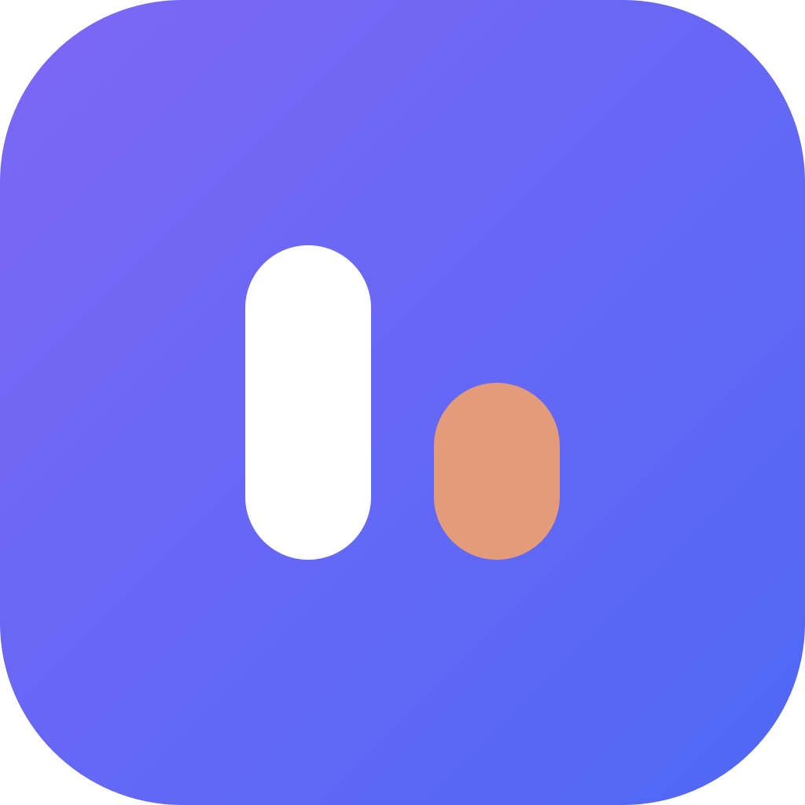

Four meters. One strip.
Compact mode keeps a single icon so macOS is less likely to hide it on a notched menu bar. Extended mode splits Codex, Claude, Cursor, and OpenCode.

UsageBarMac menu bar · local first
UsageBar watches Codex, Claude Code, Cursor, and OpenCode Go on this Mac. Remaining percent and reset countdown, matching the official apps. Nothing is sent to us.
Requires macOS 10.15+. App Store build needs macOS 11. Signed GitHub builds are notarized.
Compact mode keeps a single icon so macOS is less likely to hide it on a notched menu bar. Extended mode splits Codex, Claude, Cursor, and OpenCode.
Each tile names the window on display — 5-hour, weekly, or a model cap like Fable — and counts down to the real reset the provider reports.
The 1200×675 card is percentage, window, and countdown. Post it to X or LinkedIn from the popover. Email, tokens, and paths never leave the machine.